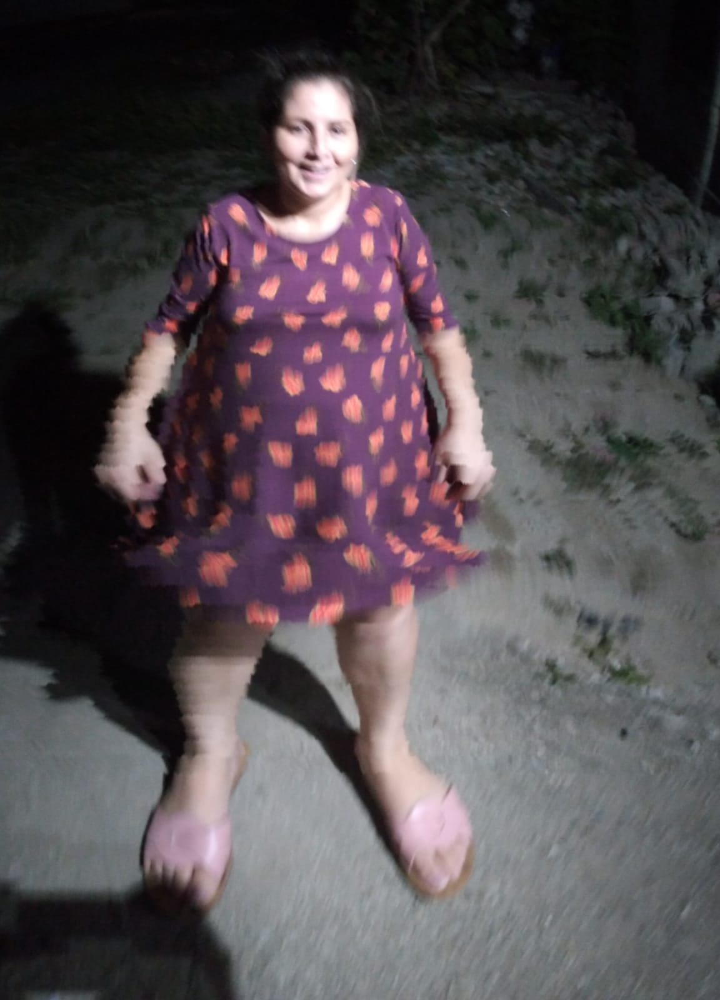

FELICIDADES MAMÁ EN TU DÍA
Esta es una manera de expresar mi agradecimiento y amor hacia ti, mamá. Con este detalle te agradezco todo lo que has hecho y haces por mi.
Muchas gracias por darme la educación que tengo, por darme amor y cariño.

Ella es Derly Waldina Rodriguez Sabillón, nació el 13 de Junio de 1985, es de San José De Oriente, Ilama, Santa Barbara. Tiene 3 hijos, siendo yo el ultimo que parió.
A mi mamá la describo como una mujer fuerte, valiente y decidida a lograr lo que quiere sin importar lo complicado que sea. Es de admirar por su desempeño y capacidad de realizar las cosas, tambien por su honestidad, inteligencia aunque tolerancia no mucho.